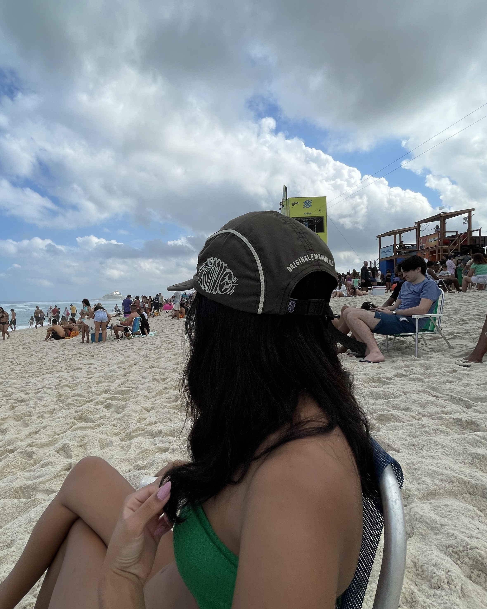

eu acho essa foto UMA GRACINHA, morro com você fazendo sempre uma careta
eu acho essa foto UMA GRACINHA, morro com você fazendo sempre uma careta

você no mato, me fazendo tirar milhares de fotos suas. honestamente o cotidiano é muito mais bonito com você

eu uso essa foto como wallpaper, e vou confessar que as vezes me pego olhando pra ela e sorrindo

você em um dos seus lugares favoritos e eu vendo minha pessoa favorita

eu sou apaixonada no seu sorriso, e fico encantada quando junta você e o sol

amo quando você sorri que nem criança e faz essa pose paradinha, é muuuito engraçadinho
a gente sempre sai pra tomar algo e é sempre uma das saídas onde sai nossos diálogos mais estranhos e você me faz rir mtmtmt

essa definitivamente é minha foto favorita, tem uma qualidade horrível mas ela é TÃO especial pra mim

você apresentando seu tcc, morri de orgulho nesse dia

eu NÃO AGUENTO com você dormindo na minha cama de touquinha, desejei poder ter isso todos os dias

você sempre serve muito, acho que eu deveria aprender com você sabia
KKKKKKKKKKKKK você paradinha com muito vento turistando, me alegra essa foto de verdade